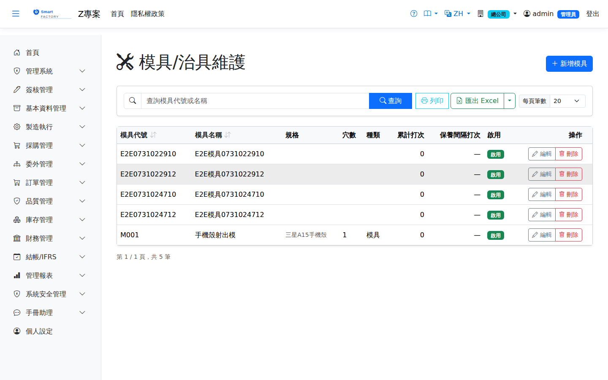

模具Tooling
路由：/BAS/Tooling | 模具主檔與基本規格維護Route: /BAS/Tooling | Tooling master and basic specifications
模具（Tooling）主檔記錄廠內所有模具的基本資料，包含規格、穴數與模具類型。排程引擎在分配射出或沖壓工序時，可依模具穴數計算每模次產量。The tooling master records the basic data of every mold and die in the plant, including specification, cavity count and type. When scheduling injection or stamping operations, the engine uses the cavity count to calculate the output per shot.

模具畫面截圖（示意，實際欄位/資料依權限與查詢條件而異）Tooling screenshot (illustrative; actual fields and data vary by permission and query criteria)
欄位說明Field reference
| 欄位名稱Field | 必填Required | 說明Guide |
|---|---|---|
| 模具代碼Tooling | 必填Required | 廠內唯一識別碼（例：M001、T-COVER-01）Unique code within the plant (e.g. M001, T-COVER-01) |
| 模具名稱Tooling Name | 必填Required | 完整名稱（例：外蓋沖壓模、底座射出模）Full name (e.g. cover stamping die, base injection mold) |
| 規格Spec | 模具尺寸、材質或其他技術規格說明Tooling dimensions, material or other technical specifications | |
| 穴數Cavity Count | 每次成型的穴數（Cavity Count），影響每模次產量計算Cavity count per shot; drives the output calculated for each shot | |
| 模具類型Tooling Type | 由代碼維護定義（例：射出模、沖壓模、壓鑄模）Defined in Code Maintenance (e.g. injection mold, stamping die, die-casting mold) | |
| 每穴產品組合Products per Cavity | 多品項一模時記錄每穴對應產品（例：A品×2 / B品×2）Records the product in each cavity for multi-product molds (e.g. product A ×2 / product B ×2) | |
| 保養間隔打次PM Interval (Shots) | 累計打次達此門檻時，系統自動建立保養停機單（HI）並將機台轉入保養中；空白或 0 = 不做打次保養管控（夾治具以點檢表管控）When the accumulated shots reach this threshold, the system creates a maintenance downtime order (HI) and puts the machine into maintenance; blank or 0 = no shot-based maintenance control (jigs and fixtures are controlled by checklists) | |
| 累計打次Accumulated Shots | 唯讀。報工自動累計（（良品＋不良）÷ 穴數）；保養完成（HO 事件、來源單號填模具代碼）後歸零Read-only. Accumulated automatically from production reports ((good + NG) ÷ cavity count); reset to zero once maintenance is completed (an HO event whose source document is the tooling code) | |
| 是否啟用Active | 停用後不可在工單或派工中選用Once inactive, cannot be selected on work orders or dispatches | |
| 備註Notes | 維護記錄、採購廠商等補充資訊Maintenance history, supplier and other supplementary information |
操作步驟Steps
1
若有需要，先至「代碼維護」建立模具類型代碼（分類：tooling_type）。If needed, create the tooling type codes first in Code Maintenance (category: tooling_type).
2
進入「基本資料 > 模具」，點「新增」。Go to "Basic Data > Tooling" and click "Add".
3
填入模具代碼、名稱，選擇模具類型，填入穴數。Enter the tooling code and name, pick a tooling type and enter the cavity count.
4
填入規格與備註（可選），點「儲存」。Enter the specification and note (optional), then click "Save".
穴數正確設定後，排程引擎計算射出工序時可自動將工單量除以穴數，得到實際開機模次數，更精準估算完工時間。With the cavity count set correctly, the scheduling engine divides the work order quantity by the cavities when planning an injection operation, giving the real number of shots and a more accurate completion time.
模具保養排程：Tooling maintenance schedule:設定「保養間隔打次」後，報工會自動累計打次；達門檻時派工/報工畫面標示「模具需保養」，並自動建立機台保養停機單。保養完成由工程師建立 HO（保養完成）事件、來源單號填入模具代碼，累計打次即歸零並開始下一週期。 Once a "PM interval (shots)" is set, production reports accumulate the shot count; when the threshold is reached the dispatch and reporting screens show "Tooling PM Due" and a machine maintenance downtime order is created automatically. After maintenance the engineer records an HO (maintenance done) event with the tooling code as the source document, and the accumulated shots reset to zero for the next cycle.
注意：Note:模具為廠別設定（PlantId 範圍），各廠獨立維護自己的模具清單，不同廠的模具代碼不互相影響。 Tooling is plant-scoped (PlantId); each plant maintains its own tooling list, and codes in one plant do not affect another.